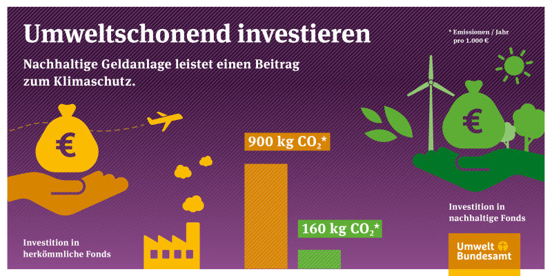

Klimaschutz
Ressourcenschonung
Keine Investitionen in Kohle, Öl, Fracking, etc.
Faire Arbeitsbedingungen
Menschenrechte beachten
Keine Kinderarbeit
Transparenz
Keine Korruption
Gleichberechtigung im Vorstand
Es gibt spezielle Fonds, die nur in "grüne" Unternehmen investieren.
Zum Beispiel GLS Bank, Triodos, oder Umweltbank.
z.B. in Solaranlage, Windparks oder soziale Unternehmen
Geld anlegen heißt Geld verleihen: Überlegen Sie, wem und wozu Sie Ihr Geld berleihen möchten. Denn das Geld, das Sie einer Bank geben, leiht bzw. investiert diese wiederum in konkrete Projekte und Werpapiere. Machen Sie sich bewusst, dass Sie auch bei abstrakten Bankprodukten letztlich konkreten Menschen und Projekten Geld leihen. Wenn Sie im Alltag auf Nachhaltigkeit und Umweltschutz achten, sollten Sie gerade bei Ihrer Geldanlage deshalb auf eine hohe Übereinstimmung mit Ihren persönlichen Werten achten. Besonders einfach ist das umzusetzen, wenn Ihre Bank ihre gesamte Anlagepolitik nach ethisch-ökologischen Kriterien ausgerichtet hat.
Die EU-Taxonomie gibt wissenschaftsbasierte Krieterien vor, die Wissenschaftsaktivitäten erfüllen müssten, damit sie sich nachhaltig nennen dürfen. Nicht zuletzt die Aufnahme von Atomenergie und Erdgas in den Kriterienkatalog verdeutlichen allerdings den Kompromisscharakter dieser europäischen Verordnung. Die europäisch vereinbarte Definition spiegekt nicht zwingend die eigenen Vorstellungen von Nachhaltigkeit. Begriffe wie "klimafreundlich", "grün", "ethisch" sind zudem bei Geldanlagen nicht geschützt. Deshalb gilt: Sie müssen genau hinschauen, was sich im Einzelfall hinter den Angeboten verbirgt und ob diese mit Ihren Werten übereinstimmen.
Wenn sie sich grundsätzlich dafür entschieden haben, Ihr Geld nach sozialen und ökologischen Kriterien anzulegen, gibt es bei den Empfehlungen zum Vorgehen keine Unterschiede zu konvetionellen Geldanlagen. Nutzen Sie klassische Informations- und Beratungsstrategien wie die "Bank des Vertrauens", unabhängige Anlageberatung, eigene (Online-)Recherche und kritische Nachfragen. Balancieren sie die drei Anlagestrategien Liquidität, Sicherheit und Rendite nach Ihrer persönlichen Situation aus.
